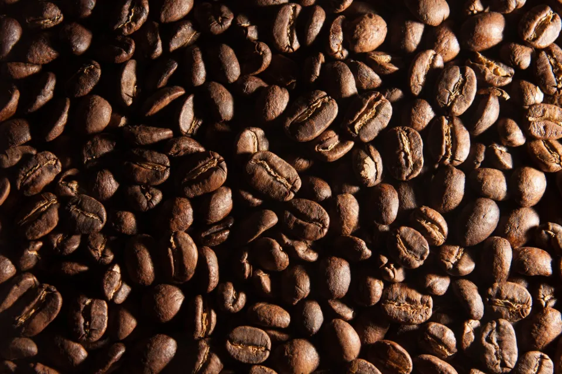
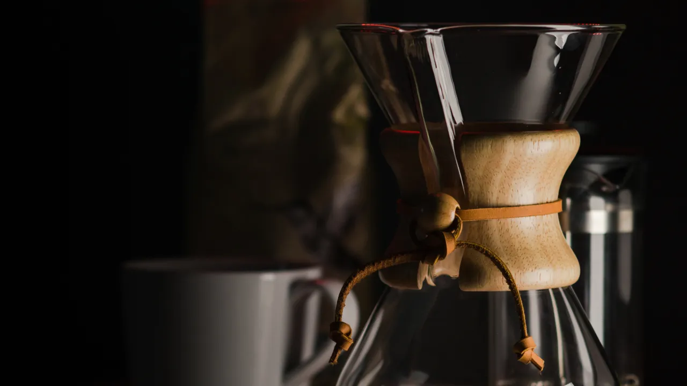
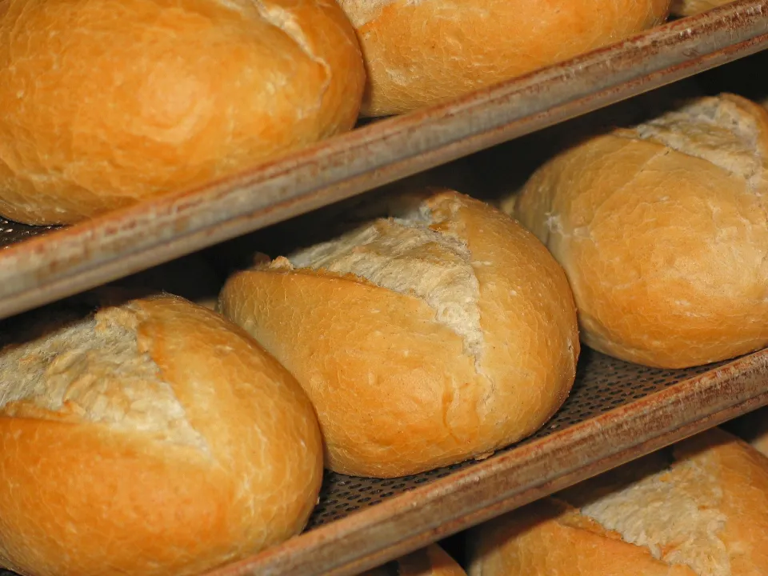
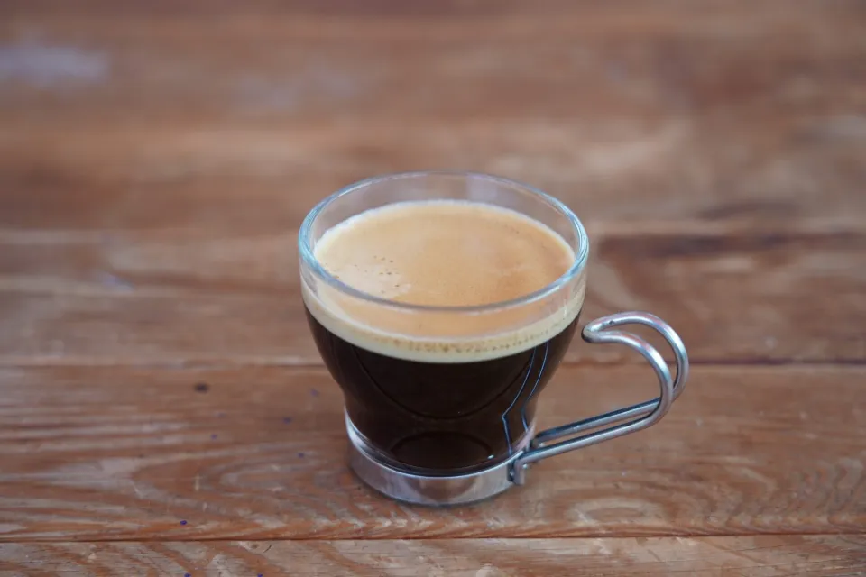
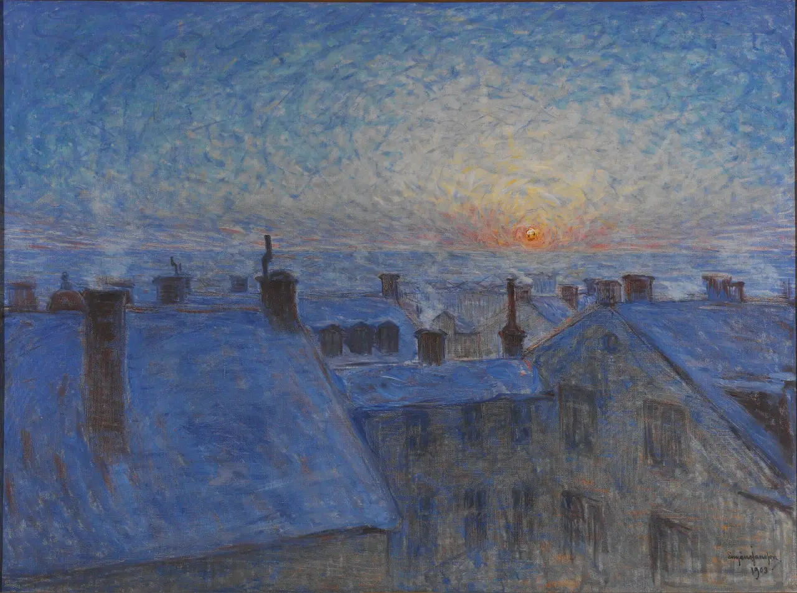

Tueste en lotes pequeños
Tostamos cada semana, en tandas de pocos kilos, para servir el grano en su mejor momento.

Café de especialidad tostado en lotes pequeños y horno encendido antes de abrir. Desde las siete de la mañana.
Precios de demostración: Café Aurora es una cafetería ficticia.
Abrimos cuando todavía es de noche. A las siete ya hay café recién molido, pan en la vitrina y sitio junto a la ventana.

Tostamos cada semana, en tandas de pocos kilos, para servir el grano en su mejor momento.

La masa se prepara la víspera y se hornea de madrugada.

El Espresso Aurora, con notas de cacao y caramelo, es la base de toda la carta.
Ubicación: próximamente.
Café Aurora es un proyecto ficticio. Horarios, carta y precios son de demostración.
